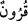
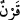
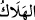
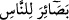
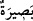

Rabbinden bir rahmet olarak (orada geçenleri sana bildirdik); ola ki düşünüp öğüt
alırlar.
47. Bizzat kendi yaptıklarından dolayı başlarına bir musibet geldiğinde:
Rabbimiz! Ne olurdu bize bir peygamber gönderseydin de, âyetlerine uysak ve
müminlerden olsaydık! diyecek olmasalardı (seni göndermezdik).
48. Fakat onlara tarafımızdan o hak (Peygamber) gelince: “Mûsâ’ya verilen
(mucizeler) gibi ona da verilmeli değil miydi?” dediler. Peki, daha önce Mûsâ’ya
verileni de inkâr etmemişler miydi? “Birbirini destekleyen iki sihir!” demişler ve
şunu söylemişlerdi: Doğrusu biz hiçbirine inanmıyoruz.
49. (Rasûlüm!) De ki: Eğer doğru sözlüler iseniz, Allah katından bu ikisinden
(bana ve Mûsâ’ya inen kitaplardan) daha doğru bir kitap getirin de ben ona
uyayım!
50. Eğer sana cevap veremezlerse, bil ki onlar, sırf heveslerine uymaktadırlar.
Allah’tan bir yol gösterici olmaksızın kendi hevesine uyandan daha sapık kim
olabilir! Elbette Allah zalim kavmi doğru yola iletmez.
“Andolsun biz, ilk nesilleri yok ettikten sonra Mûsâ’ya…”
“__WORD__ (nesiller)”; “__WORD__ kelimesinin çoğuludur; aynı asırda yaşayan insan topluluğuna
denir, “nesil” anlamına gelir. Yani, dünyada azabla helâk ettiğimiz Nûh, Hûd, Sâlih ve
Lût (a.s.)’ın kavimlerinden sonra... demektir.
Râğıb İsfehânî, el-Müfredât’ında der ki:
kelimesi, “ölüm” mânâsına gelir. Allah
Teâlâ bu fiili sadece şu üç âyette kötüleme (zem) mânâsı dışında, yâni ölüm anlamında
kullanmıştır.
1. “Ölen kişinin çocuğu yok bir kız kardeşi varsa...” (en-Nisâ, 4/176)
2. “Bizi zamandan başkası helâk etmiyor.” (el-Câsiye, 45/24)
3. “Nihâyet o (Yusuf) ölünce: “Allah ondan sonra elçi göndermez, dediniz” (el-
Gâfir 40/34)
“Düşünüp öğüt alsınlar diye- insanlar için” onların gönül gözlerini aydınlatacak
“apaçık deliller,”
“__WORD__ (apaçık deliller)” ifâdesi, “__WORD__ (Kitap)”tan hâldir; zira o apaçık delillerin
bizzat kendisidir. Sonrasında gelen “hidâyet” ve “rahmet” kelimeleri de böyledir. “
”;k“__WORD__ kelimesinin çoğuludur ki idrak, basiret ve anlayış mânâlarına gelir. Bu, kalpde
bulunan öyle bir nurdur ki insan kafa gözüyle etrafını nasıl görüyorsa, bu nurla da
hakikatları görür.
Yani, bu kitab, İsrâiloğullarının kalblerinin nuru olarak onunla hakîkatları görüp
anlayış ve idrakten tamamen yoksun oldukları konularda hak ve bâtılı birbirinden
ayırsınlar, diye...
Allah’ın yolu olan şeriat ve ahkâma götüren bir yol gösterici,“hidâyet rehberi...”
İnsânu’l-uyûn’da der ki: Tevrat; ahkâm ve şeriatları ihtivâ eden ilk kitaptır; bu